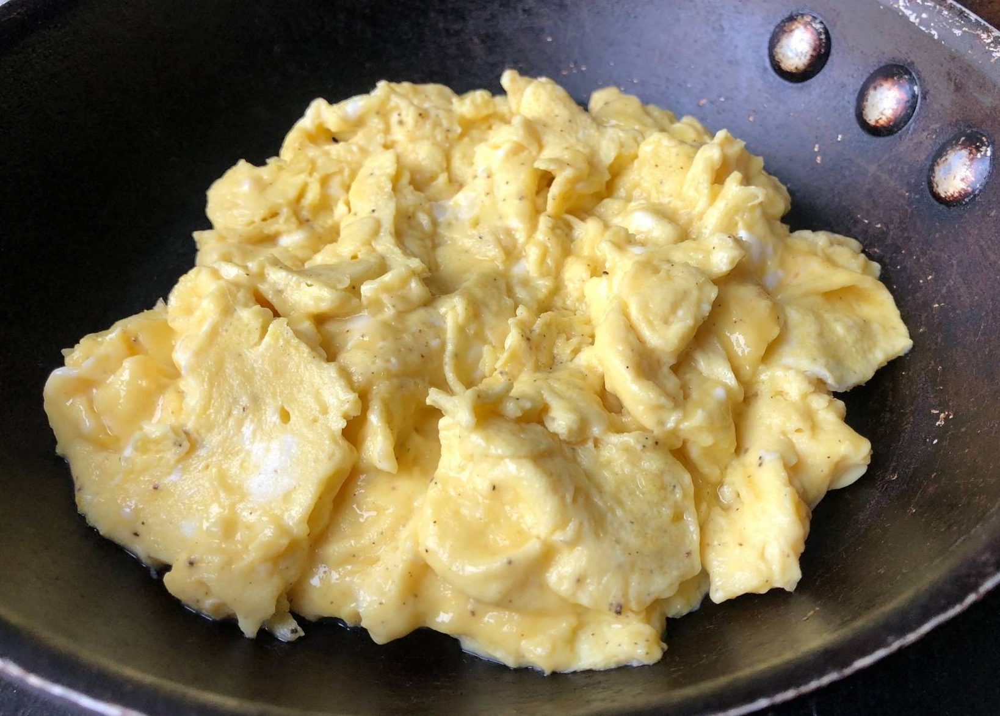

SCRAMBLED EGGS

description
Whisk eggs with salt and pepper. Melt butter in a pan, pour eggs, and stir gently until curds form. Remove from heat while still slightly runny. Serve warm.
ingredients
- 2 eggs
- 1 tablespoon of oil or butter
- salt and pepper to taste
steps
- Beat eggs in a bowl with a pinch of salt and pepper.
- Melt butter in a non-stick skillet over medium heat.
- Pour in the eggs and gently stir with a spatula until soft curds form.
- Remove from heat while still slightly runny for creamy scrambled eggs.